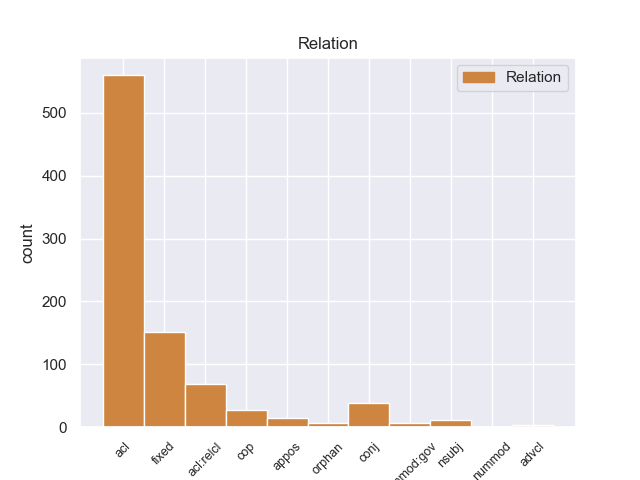
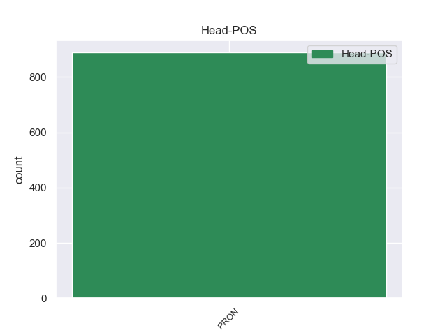
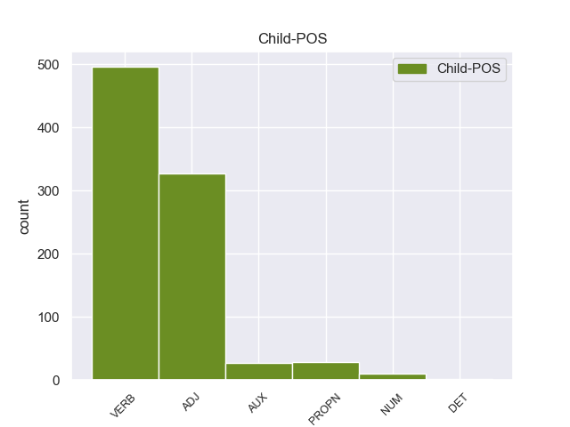

Distribution of features within this leaf



Agreement Rules sorted by frequency.
- When the dependent token is the fixed multiword expression(fixed) of the head token, and the head token is PRON and the dependent token is ADJ.
1 - _ _ _ _ 0 _ _ _
2 Она _ _ _ _ 0 _ _ _
3 все все PRON _ Animacy=Inan|Case=Nom|Gender=Neut|Number=Sing 0 _ _ _
4 равно равный ADJ _ Degree=Pos|Gender=Neut|Number=Sing|Variant=Short 3 fixed 3:fixed _
5 никуда _ _ _ _ 0 _ _ _
6 не _ _ _ _ 0 _ _ _
7 ведет _ _ _ _ 0 _ _ _
8 ! _ _ _ _ 0 _ _ _
1 Я _ _ _ _ 0 _ _ _
2 вытряхнул _ _ _ _ 0 _ _ _
3 грибы _ _ _ _ 0 _ _ _
4 из _ _ _ _ 0 _ _ _
5 рубашки _ _ _ _ 0 _ _ _
6 и _ _ _ _ 0 _ _ _
7 надел _ _ _ _ 0 _ _ _
8 ее она PRON _ Case=Acc|Gender=Fem|Number=Sing|Person=3 0 _ _ _
9 на _ _ _ _ 0 _ _ _
10 себя _ _ _ _ 0 _ _ _
11 , _ _ _ _ 0 _ _ _
12 безнадежно _ _ _ _ 0 _ _ _
13 замаранную замарать VERB _ Aspect=Perf|Case=Acc|Gender=Fem|Number=Sing|Tense=Past|VerbForm=Part|Voice=Pass 8 acl 8:acl SpaceAfter=No
14 , _ _ _ _ 0 _ _ _
15 приятно _ _ _ _ 0 _ _ _
16 и _ _ _ _ 0 _ _ _
17 остро _ _ _ _ 0 _ _ _
18 пахучую _ _ _ _ 0 _ _ _
19 от _ _ _ _ 0 _ _ _
20 свинушек _ _ _ _ 0 _ _ _
21 , _ _ _ _ 0 _ _ _
22 и _ _ _ _ 0 _ _ _
23 двинулся _ _ _ _ 0 _ _ _
24 дальше _ _ _ _ 0 _ _ _
25 . _ _ _ _ 0 _ _ _
1 Однако _ _ _ _ 0 _ _ _
2 прежде _ _ _ _ 0 _ _ _
3 , _ _ _ _ 0 _ _ _
4 чем _ _ _ _ 0 _ _ _
5 судить _ _ _ _ 0 _ _ _
6 о _ _ _ _ 0 _ _ _
7 том то PRON _ Animacy=Inan|Case=Loc|Gender=Neut|Number=Sing 0 _ _ _
8 , _ _ _ _ 0 _ _ _
9 плохо плохой ADJ _ Degree=Pos|Gender=Neut|Number=Sing|Variant=Short 7 acl 7:acl _
10 это _ _ _ _ 0 _ _ _
11 или _ _ _ _ 0 _ _ _
12 хорошо _ _ _ _ 0 _ _ _
13 , _ _ _ _ 0 _ _ _
14 стоит _ _ _ _ 0 _ _ _
15 разобраться _ _ _ _ 0 _ _ _
16 , _ _ _ _ 0 _ _ _
17 почему _ _ _ _ 0 _ _ _
18 так _ _ _ _ 0 _ _ _
19 происходит _ _ _ _ 0 _ _ _
20 . _ _ _ _ 0 _ _ _
1 Павлов _ _ _ _ 0 _ _ _
2 думал _ _ _ _ 0 _ _ _
3 об _ _ _ _ 0 _ _ _
4 этом _ _ _ _ 0 _ _ _
5 с _ _ _ _ 0 _ _ _
6 той _ _ _ _ 0 _ _ _
7 же _ _ _ _ 0 _ _ _
8 серьезностью _ _ _ _ 0 _ _ _
9 , _ _ _ _ 0 _ _ _
10 с _ _ _ _ 0 _ _ _
11 какой _ _ _ _ 0 _ _ _
12 относился _ _ _ _ 0 _ _ _
13 ко _ _ _ _ 0 _ _ _
14 всему все PRON _ Animacy=Inan|Case=Dat|Gender=Neut|Number=Sing 0 _ _ _
15 , _ _ _ _ 0 _ _ _
16 что _ _ _ _ 0 _ _ _
17 касалось касаться VERB _ Aspect=Imp|Gender=Neut|Mood=Ind|Number=Sing|Tense=Past|VerbForm=Fin|Voice=Mid 14 acl:relcl 14:acl:relcl _
18 детей _ _ _ _ 0 _ _ _
19 , _ _ _ _ 0 _ _ _
20 но _ _ _ _ 0 _ _ _
21 ответа _ _ _ _ 0 _ _ _
22 не _ _ _ _ 0 _ _ _
23 нашел _ _ _ _ 0 _ _ _
24 . _ _ _ _ 0 _ _ _
1 Теперь _ _ _ _ 0 _ _ _
2 Алиса _ _ _ _ 0 _ _ _
3 с _ _ _ _ 0 _ _ _
4 легкостью _ _ _ _ 0 _ _ _
5 и _ _ _ _ 0 _ _ _
6 удовольствием _ _ _ _ 0 _ _ _
7 делает _ _ _ _ 0 _ _ _
8 и _ _ _ _ 0 _ _ _
9 то то PRON _ Animacy=Inan|Case=Acc|Gender=Neut|Number=Sing 0 _ _ _
10 и _ _ _ _ 0 _ _ _
11 другое другой ADJ _ Case=Acc|Degree=Pos|Gender=Neut|Number=Sing 9 conj 9:conj SpaceAfter=No
12 . _ _ _ _ 0 _ _ _
1 Был быть AUX _ Aspect=Imp|Gender=Masc|Mood=Ind|Number=Sing|Tense=Past|VerbForm=Fin|Voice=Act 4 cop 4:cop _
2 же _ _ _ _ 0 _ _ _
3 у _ _ _ _ 0 _ _ _
4 него он PRON _ Case=Gen|Gender=Masc|Number=Sing|Person=3 0 _ _ _
5 опыт _ _ _ _ 0 _ _ _
6 собственного _ _ _ _ 0 _ _ _
7 детства _ _ _ _ 0 _ _ _
8 , _ _ _ _ 0 _ _ _
9 был _ _ _ _ 0 _ _ _
10 же _ _ _ _ 0 _ _ _
11 он _ _ _ _ 0 _ _ _
12 сам _ _ _ _ 0 _ _ _
13 ребенком _ _ _ _ 0 _ _ _
14 ! _ _ _ _ 0 _ _ _
1 В _ _ _ _ 0 _ _ _
2 завалах _ _ _ _ 0 _ _ _
3 играли _ _ _ _ 0 _ _ _
4 дети _ _ _ _ 0 _ _ _
5 , _ _ _ _ 0 _ _ _
6 там _ _ _ _ 0 _ _ _
7 легко _ _ _ _ 0 _ _ _
8 было _ _ _ _ 0 _ _ _
9 нафантазировать _ _ _ _ 0 _ _ _
10 все все PRON _ Animacy=Inan|Case=Acc|Gender=Neut|Number=Sing 0 _ _ _
11 , _ _ _ _ 0 _ _ _
12 что _ _ _ _ 0 _ _ _
13 угодно угодный ADJ _ Degree=Pos|Gender=Neut|Number=Sing|Variant=Short 10 acl:relcl 10:acl:relcl SpaceAfter=No
14 . _ _ _ _ 0 _ _ _
1 Довольно _ _ _ _ 0 _ _ _
2 болтать _ _ _ _ 0 _ _ _
3 , _ _ _ _ 0 _ _ _
4 ешьте _ _ _ _ 0 _ _ _
5 ! _ _ _ _ 0 _ _ _
6 - _ _ _ _ 0 _ _ _
7 непривычно _ _ _ _ 0 _ _ _
8 резко _ _ _ _ 0 _ _ _
9 сказала _ _ _ _ 0 _ _ _
10 мать _ _ _ _ 0 _ _ _
11 , _ _ _ _ 0 _ _ _
12 и _ _ _ _ 0 _ _ _
13 Павлов _ _ _ _ 0 _ _ _
14 понял _ _ _ _ 0 _ _ _
15 , _ _ _ _ 0 _ _ _
16 что _ _ _ _ 0 _ _ _
17 она _ _ _ _ 0 _ _ _
18 тоже _ _ _ _ 0 _ _ _
19 не _ _ _ _ 0 _ _ _
20 в _ _ _ _ 0 _ _ _
21 первый _ _ _ _ 0 _ _ _
22 раз _ _ _ _ 0 _ _ _
23 слышит _ _ _ _ 0 _ _ _
24 о _ _ _ _ 0 _ _ _
25 зеленой _ _ _ _ 0 _ _ _
26 птице _ _ _ _ 0 _ _ _
27 с _ _ _ _ 0 _ _ _
28 красной _ _ _ _ 0 _ _ _
29 головой _ _ _ _ 0 _ _ _
30 , _ _ _ _ 0 _ _ _
31 и _ _ _ _ 0 _ _ _
32 эта _ _ _ _ 0 _ _ _
33 назойливая _ _ _ _ 0 _ _ _
34 выдумка _ _ _ _ 0 _ _ _
35 раздражает _ _ _ _ 0 _ _ _
36 ее _ _ _ _ 0 _ _ _
37 , _ _ _ _ 0 _ _ _
38 как _ _ _ _ 0 _ _ _
39 заботит _ _ _ _ 0 _ _ _
40 и _ _ _ _ 0 _ _ _
41 огорчает _ _ _ _ 0 _ _ _
42 его он PRON _ Case=Acc|Gender=Masc|Number=Sing|Person=3 0 _ _ _
43 , _ _ _ _ 0 _ _ _
44 Павлова Павлов PROPN _ Animacy=Anim|Case=Gen|Gender=Masc|Number=Sing 42 appos 42:appos SpaceAfter=No
45 . _ _ _ _ 0 _ _ _
1 Никому _ _ _ _ 0 _ _ _
2 он _ _ _ _ 0 _ _ _
3 не _ _ _ _ 0 _ _ _
4 был _ _ _ _ 0 _ _ _
5 особенно _ _ _ _ 0 _ _ _
6 нужен _ _ _ _ 0 _ _ _
7 - _ _ _ _ 0 _ _ _
8 он _ _ _ _ 0 _ _ _
9 как _ _ _ _ 0 _ _ _
10 он он PRON _ Case=Nom|Gender=Masc|Number=Sing|Person=3 0 _ _ _
11 , _ _ _ _ 0 _ _ _
12 лично _ _ _ _ 0 _ _ _
13 как _ _ _ _ 0 _ _ _
14 Гарусов Гарусов PROPN _ Animacy=Anim|Case=Nom|Gender=Masc|Number=Sing 10 conj 10:conj SpaceAfter=No
15 . _ _ _ _ 0 _ _ _
1 Но _ _ _ _ 0 _ _ _
2 , _ _ _ _ 0 _ _ _
3 конечно _ _ _ _ 0 _ _ _
4 , _ _ _ _ 0 _ _ _
5 главное главный ADJ _ Case=Nom|Degree=Pos|Gender=Neut|Number=Sing 7 nsubj 7:nsubj _
6 в _ _ _ _ 0 _ _ _
7 том то PRON _ Animacy=Inan|Case=Loc|Gender=Neut|Number=Sing 0 _ _ _
8 , _ _ _ _ 0 _ _ _
9 что _ _ _ _ 0 _ _ _
10 открыто _ _ _ _ 0 _ _ _
11 не _ _ _ _ 0 _ _ _
12 известное _ _ _ _ 0 _ _ _
13 ранее _ _ _ _ 0 _ _ _
14 физическое _ _ _ _ 0 _ _ _
15 явление _ _ _ _ 0 _ _ _
16 . _ _ _ _ 0 _ _ _
1 Она она PRON _ Case=Nom|Gender=Fem|Number=Sing|Person=3 0 _ _ _
1.1 _ _ _ _ _ 0 _ _ _
2 ничего _ _ _ _ 0 _ _ _
3 , _ _ _ _ 0 _ _ _
4 как _ _ _ _ 0 _ _ _
When the dependent token is the numeric modifer governing case of noun(nummod:gov) of the head token, and the head token is PRON and the dependent token is NUM.
1 Одно один NUM _ Case=Nom|Gender=Neut 9 nummod:gov 9:nummod:gov _
2 из _ _ _ _ 0 _ _ _
3 ключевых _ _ _ _ 0 _ _ _
4 направлений _ _ _ _ 0 _ _ _
5 программы _ _ _ _ 0 _ _ _
6 народно-патриотических _ _ _ _ 0 _ _ _
7 сил _ _ _ _ 0 _ _ _
8 - _ _ _ _ 0 _ _ _
9 это это PRON _ Animacy=Inan|Case=Nom|Gender=Neut|Number=Sing 0 _ _ _
10 сочетание _ _ _ _ 0 _ _ _
11 требований _ _ _ _ 0 _ _ _
12 социальной _ _ _ _ 0 _ _ _
13 справедливости _ _ _ _ 0 _ _ _
14 и _ _ _ _ 0 _ _ _
15 экономического _ _ _ _ 0 _ _ _
16 роста _ _ _ _ 0 _ _ _
17 . _ _ _ _ 0 _ _ _
When the dependent token is the conjunct(conj) of the head token, and the head token is PRON and the dependent token is VERB.
1 Не _ _ _ _ 0 _ _ _
2 было _ _ _ _ 0 _ _ _
3 в _ _ _ _ 0 _ _ _
4 нем он PRON _ Case=Loc|Gender=Masc|Number=Sing|Person=3 0 _ _ _
5 никакого _ _ _ _ 0 _ _ _
6 напускного _ _ _ _ 0 _ _ _
7 величия _ _ _ _ 0 _ _ _
8 , _ _ _ _ 0 _ _ _
9 и _ _ _ _ 0 _ _ _
10 вел вести VERB _ Aspect=Imp|Gender=Masc|Mood=Ind|Number=Sing|Tense=Past|VerbForm=Fin|Voice=Act 4 conj 4:conj _
11 он _ _ _ _ 0 _ _ _
12 себя _ _ _ _ 0 _ _ _
13 как _ _ _ _ 0 _ _ _
14 обыкновенный _ _ _ _ 0 _ _ _
15 человек _ _ _ _ 0 _ _ _
16 . _ _ _ _ 0 _ _ _
When the dependent token is the adverbial clause modifier(advcl) of the head token, and the head token is PRON and the dependent token is PROPN.
1 " _ _ _ _ 0 _ _ _
2 Десталинизация _ _ _ _ 0 _ _ _
3 " _ _ _ _ 0 _ _ _
4 России _ _ _ _ 0 _ _ _
5 , _ _ _ _ 0 _ _ _
6 о _ _ _ _ 0 _ _ _
7 которой _ _ _ _ 0 _ _ _
8 при _ _ _ _ 0 _ _ _
9 прошлом _ _ _ _ 0 _ _ _
10 президенте _ _ _ _ 0 _ _ _
11 упомянул _ _ _ _ 0 _ _ _
12 было _ _ _ _ 0 _ _ _
13 его _ _ _ _ 0 _ _ _
14 Совет _ _ _ _ 0 _ _ _
15 по _ _ _ _ 0 _ _ _
16 правам _ _ _ _ 0 _ _ _
17 человека _ _ _ _ 0 _ _ _
18 , _ _ _ _ 0 _ _ _
19 оказалась _ _ _ _ 0 _ _ _
20 невозможна _ _ _ _ 0 _ _ _
21 потому _ _ _ _ 0 _ _ _
22 , _ _ _ _ 0 _ _ _
23 что _ _ _ _ 0 _ _ _
24 в _ _ _ _ 0 _ _ _
25 ней она PRON _ Case=Loc|Gender=Fem|Number=Sing|Person=3 0 _ _ _
26 не _ _ _ _ 0 _ _ _
27 было _ _ _ _ 0 _ _ _
28 , _ _ _ _ 0 _ _ _
29 как _ _ _ _ 0 _ _ _
30 в _ _ _ _ 0 _ _ _
31 Германии Германия PROPN _ Animacy=Inan|Case=Loc|Gender=Fem|Number=Sing 25 advcl 25:advcl SpaceAfter=No
32 , _ _ _ _ 0 _ _ _
33 своего _ _ _ _ 0 _ _ _
34 Фрица _ _ _ _ 0 _ _ _
35 Бауэра _ _ _ _ 0 _ _ _
36 . _ _ _ _ 0 _ _ _
When the dependent token is the adjectival clause(acl) of the head token, and the head token is PRON and the dependent token is DET.
1 За _ _ _ _ 0 _ _ _
2 исключением _ _ _ _ 0 _ _ _
3 небесспорного _ _ _ _ 0 _ _ _
4 тезиса _ _ _ _ 0 _ _ _
5 о _ _ _ _ 0 _ _ _
6 том то PRON _ Animacy=Inan|Case=Loc|Gender=Neut|Number=Sing 0 _ _ _
7 , _ _ _ _ 0 _ _ _
8 что _ _ _ _ 0 _ _ _
9 служение _ _ _ _ 0 _ _ _
10 Богу _ _ _ _ 0 _ _ _
11 и _ _ _ _ 0 _ _ _
12 Церкви _ _ _ _ 0 _ _ _
13 - _ _ _ _ 0 _ _ _
14 всегда _ _ _ _ 0 _ _ _
15 одно один DET _ Case=Nom|Degree=Pos|Gender=Neut|Number=Sing 6 acl 6:acl _
16 и _ _ _ _ 0 _ _ _
17 то _ _ _ _ 0 _ _ _
18 же _ _ _ _ 0 _ _ _
19 , _ _ _ _ 0 _ _ _
20 всё _ _ _ _ 0 _ _ _
21 это _ _ _ _ 0 _ _ _
22 можно _ _ _ _ 0 _ _ _
23 было _ _ _ _ 0 _ _ _
24 сказать _ _ _ _ 0 _ _ _
25 и _ _ _ _ 0 _ _ _
26 короче _ _ _ _ 0 _ _ _
27 : _ _ _ _ 0 _ _ _
28 пойдите _ _ _ _ 0 _ _ _
29 вон _ _ _ _ 0 _ _ _
30 , _ _ _ _ 0 _ _ _
31 ублюдки _ _ _ _ 0 _ _ _
32 . _ _ _ _ 0 _ _ _
When the dependent token is the appositional modifier(appos) of the head token, and the head token is PRON and the dependent token is ADJ.
1 Даже _ _ _ _ 0 _ _ _
2 он он PRON _ Case=Nom|Gender=Masc|Number=Sing|Person=3 0 _ _ _
3 , _ _ _ _ 0 _ _ _
4 этот _ _ _ _ 0 _ _ _
5 рыжий рыжий ADJ _ Case=Nom|Degree=Pos|Gender=Masc|Number=Sing 2 appos 2:appos SpaceAfter=No
6 , _ _ _ _ 0 _ _ _
7 был _ _ _ _ 0 _ _ _
8 мне _ _ _ _ 0 _ _ _
9 интересен _ _ _ _ 0 _ _ _
10 . _ _ _ _ 0 _ _ _
Disagree Examples:
1 Да _ _ _ _ 0 _ _ _
2 , _ _ _ _ 0 _ _ _
3 я _ _ _ _ 0 _ _ _
4 вас _ _ _ _ 0 _ _ _
5 слушаю _ _ _ _ 0 _ _ _
6 , _ _ _ _ 0 _ _ _
7 - _ _ _ _ 0 _ _ _
8 повторил _ _ _ _ 0 _ _ _
9 Семен _ _ _ _ 0 _ _ _
10 Еремеевич _ _ _ _ 0 _ _ _
11 , _ _ _ _ 0 _ _ _
12 несколько _ _ _ _ 0 _ _ _
13 раздражаясь _ _ _ _ 0 _ _ _
14 от _ _ _ _ 0 _ _ _
15 того то PRON _ Animacy=Inan|Case=Gen|Gender=Neut|Number=Sing 0 _ _ _
16 , _ _ _ _ 0 _ _ _
17 что _ _ _ _ 0 _ _ _
18 третья _ _ _ _ 0 _ _ _
19 причина _ _ _ _ 0 _ _ _
20 улетучилась улетучиться VERB _ Aspect=Perf|Gender=Fem|Mood=Ind|Number=Sing|Tense=Past|VerbForm=Fin|Voice=Mid 15 acl 15:acl _
21 из _ _ _ _ 0 _ _ _
22 памяти _ _ _ _ 0 _ _ _
23 . _ _ _ _ 0 _ _ _
1 Сложность _ _ _ _ 0 _ _ _
2 вопроса _ _ _ _ 0 _ _ _
3 заключалась _ _ _ _ 0 _ _ _
4 в _ _ _ _ 0 _ _ _
5 том то PRON _ Animacy=Inan|Case=Loc|Gender=Neut|Number=Sing 0 _ _ _
6 , _ _ _ _ 0 _ _ _
7 что _ _ _ _ 0 _ _ _
8 во _ _ _ _ 0 _ _ _
9 время _ _ _ _ 0 _ _ _
10 войны _ _ _ _ 0 _ _ _
11 Ефимова _ _ _ _ 0 _ _ _
12 находилась находиться VERB _ Aspect=Imp|Gender=Fem|Mood=Ind|Number=Sing|Tense=Past|VerbForm=Fin|Voice=Mid 5 acl 5:acl _
13 в _ _ _ _ 0 _ _ _
14 оккупации _ _ _ _ 0 _ _ _
15 . _ _ _ _ 0 _ _ _
1 Ослепительно _ _ _ _ 0 _ _ _
2 сверкнувший _ _ _ _ 0 _ _ _
3 огонь _ _ _ _ 0 _ _ _
4 и _ _ _ _ 0 _ _ _
5 еще _ _ _ _ 0 _ _ _
6 что-то _ _ _ _ 0 _ _ _
7 острое _ _ _ _ 0 _ _ _
8 вошло _ _ _ _ 0 _ _ _
9 в _ _ _ _ 0 _ _ _
10 него _ _ _ _ 0 _ _ _
11 , _ _ _ _ 0 _ _ _
12 в _ _ _ _ 0 _ _ _
13 мозг _ _ _ _ 0 _ _ _
14 его _ _ _ _ 0 _ _ _
15 , _ _ _ _ 0 _ _ _
16 в _ _ _ _ 0 _ _ _
17 тело _ _ _ _ 0 _ _ _
18 , _ _ _ _ 0 _ _ _
19 вошло _ _ _ _ 0 _ _ _
20 безбольно _ _ _ _ 0 _ _ _
21 и _ _ _ _ 0 _ _ _
22 мягко _ _ _ _ 0 _ _ _
23 , _ _ _ _ 0 _ _ _
24 словно _ _ _ _ 0 _ _ _
25 не _ _ _ _ 0 _ _ _
26 было быть AUX _ Aspect=Imp|Gender=Neut|Mood=Ind|Number=Sing|Tense=Past|VerbForm=Fin|Voice=Act 28 cop 28:cop _
27 в _ _ _ _ 0 _ _ _
28 нем он PRON _ Case=Loc|Gender=Masc|Number=Sing|Person=3 0 _ _ _
29 ни _ _ _ _ 0 _ _ _
30 костей _ _ _ _ 0 _ _ _
31 , _ _ _ _ 0 _ _ _
32 ни _ _ _ _ 0 _ _ _
33 нервов _ _ _ _ 0 _ _ _
34 . _ _ _ _ 0 _ _ _
1 Но _ _ _ _ 0 _ _ _
2 это это PRON _ Animacy=Inan|Case=Nom|Gender=Neut|Number=Sing 0 _ _ _
3 , _ _ _ _ 0 _ _ _
3.1 _ _ _ _ _ 0 _ _ _
4 когда _ _ _ _ 0 _ _ _
5 разведчик _ _ _ _ 0 _ _ _
6 уже _ _ _ _ 0 _ _ _
1 " _ _ _ _ 0 _ _ _
2 Я _ _ _ _ 0 _ _ _
3 не _ _ _ _ 0 _ _ _
4 постесняюсь _ _ _ _ 0 _ _ _
5 сказать _ _ _ _ 0 _ _ _
6 , _ _ _ _ 0 _ _ _
7 что _ _ _ _ 0 _ _ _
8 само _ _ _ _ 0 _ _ _
9 будущее _ _ _ _ 0 _ _ _
10 страны _ _ _ _ 0 _ _ _
11 зависит _ _ _ _ 0 _ _ _
12 от _ _ _ _ 0 _ _ _
13 того то PRON _ Animacy=Inan|Case=Gen|Gender=Neut|Number=Sing 0 _ _ _
14 , _ _ _ _ 0 _ _ _
15 как _ _ _ _ 0 _ _ _
16 будет _ _ _ _ 0 _ _ _
17 использован использовать VERB _ Aspect=Perf|Gender=Masc|Number=Sing|Tense=Past|Variant=Short|VerbForm=Part|Voice=Pass 13 acl 13:acl _
18 наш _ _ _ _ 0 _ _ _
19 интеллектуальный _ _ _ _ 0 _ _ _
20 потенциал _ _ _ _ 0 _ _ _
21 , _ _ _ _ 0 _ _ _
22 - _ _ _ _ 0 _ _ _
23 говорит _ _ _ _ 0 _ _ _
24 президент _ _ _ _ 0 _ _ _
25 РАН _ _ _ _ 0 _ _ _
26 Юрий _ _ _ _ 0 _ _ _
27 Осипов _ _ _ _ 0 _ _ _
28 . _ _ _ _ 0 _ _ _